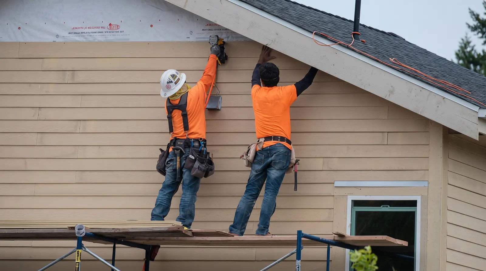
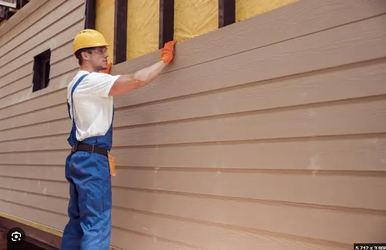

New Siding Installation
For homes that need a new exterior finish.
Space Up Construction · Massachusetts
Give your home’s exterior a fresh start. Space Up installs and replaces residential siding, with the work scoped around the condition of your home.
Siding
Loose, cracked, faded, or damaged siding is a good reason to have the exterior checked before another Massachusetts winter. Space Up handles siding installation and replacement for residential properties, with the work scoped around the condition of the home.

For homes that need a new exterior finish.
For existing siding that is worn, damaged, or ready to be updated.
Edges, corners, and transitions around windows and doors are considered as part of the siding project for a consistent exterior.
When to Replace Siding
Start with what you can see. Loose boards, visible damage, and a worn exterior are reasons to discuss the condition of your siding and the scope of a replacement.
Point out loose sections, cracks, or gaps so those areas can be considered when reviewing the project.
Existing damage helps define which areas need attention and how much siding may need to be replaced.
If your siding looks faded or dated, replacement is an opportunity to update the appearance of your home.
Your Siding Project
Whether you need siding for a new exterior or replacement of existing siding, the starting point is your home. Tell us what needs to change so we can discuss the areas involved and the next steps.
Projects
Illustrative siding images.

From Quote to Schedule
Tell us whether you need new siding or replacement and where the property is located.
We’ll go over the condition of the existing siding and the areas included in the installation or replacement.
Once the scope is defined, the next steps and scheduling can be arranged.
Yes. Space Up handles residential siding installation and replacement in Massachusetts.
Loose, cracked, faded, or damaged siding is a reason to have the exterior checked. The condition of the existing siding helps determine the scope of replacement.
Yes. Space Up offers new siding installation for residential properties. Tell us about the home and the areas that need siding.
Share the property location, whether you need new installation or replacement, and any visible damage or areas you want to update.
The condition of the existing siding, the areas to be covered, and the details around edges, corners, windows, and doors help define the work involved.
Once the scope is defined, Space Up can discuss the next steps and scheduling for your property.
Call Space Up at (508) 474-9407 or email contact@spaceupconstruction.com with basic information about your siding project. The preview form does not send requests.
Request a Siding Quote
Call or email Space Up to discuss your siding installation or replacement. The form below is a preview and does not send information.
(508) 474-9407Space Up Construction
Call or email Space Up to discuss new siding or replacement for your Massachusetts home.